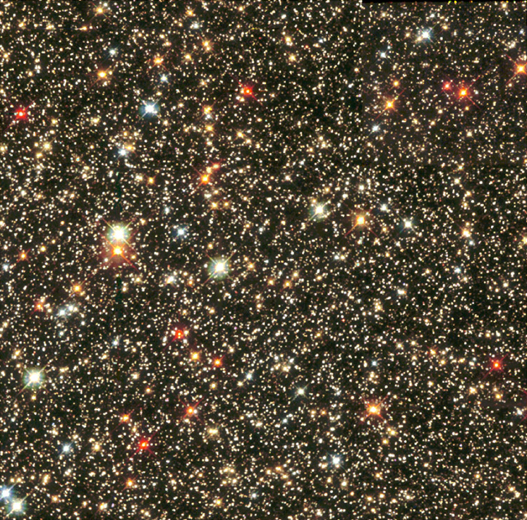
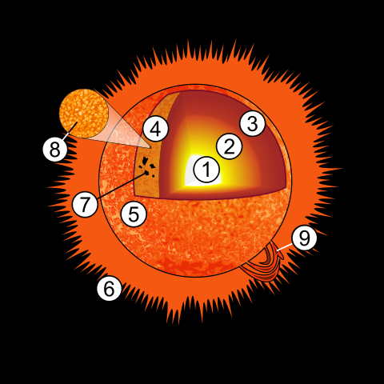
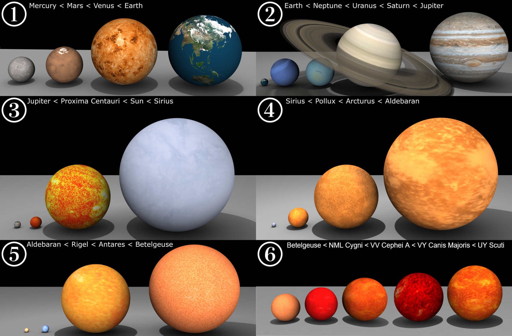
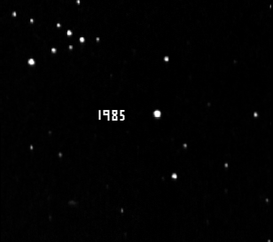
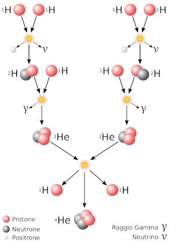
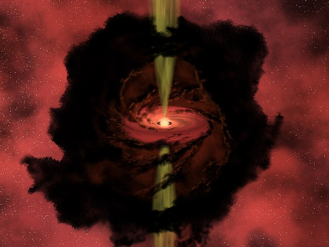
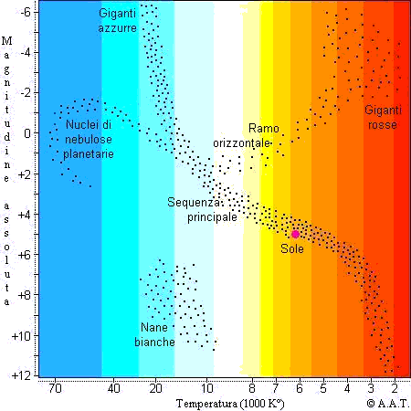

Le stelle
Cosa sono e come si formano
Chi sono?
Storia dello studio delle stelle
- Preistoria: le prime costellazioni e asterismi. Notano la differenza tra "stelle fisse" e "stelle vagabonde"
- Età classica e medioevo: prime conoscenze di meccanica celeste. Primi dubbi sull'immutabilità del cielo
- Età moderna: Giordano Bruno, Montanari, Halley, Hershel e molti altri
- XIX secolo: Bessel e la prima misurazione di distanza. I primi studi spettrografici e le prima classi spettrali
- XX secolo: Arriva la fotografia e l'elettronica
Le stelle: cosa sono?
La struttura di una stella
Dimensioni
Moti spaziali
Le reazioni nucleari
Il ciclo di vita di una stella
La protostella
La Fase Principale
La terza età
Morte di una stella
- 0.08-0.4 MS Nana bianca
- 0.4-8 MS Nana bianca con nebulosa planetaria
- >8 MS Supernova di tipo II o di tipo Ib o Ic se >30 MS
- Se il residuo è 1.4-3.8 MS si forma una stella di neutroni (pulsar)
- Se il residuo >3.8 MS si forma un buco nero
La classificazione delle stelle
Le classi di luminosità
- 0 - Ipergiganti
- I - Supergiganti
- II - Giganti brillanti
- III - Giganti
- IV - Subgiganti
- V - Stelle di sequenza principale
- VI - Subnane (anche sd e esd)
- VII - Nane (più spesso WD)
Le classi spettrali
| Temperatura | Colore assoluto | Colore apparente | Classe Spettrale | Massa | Raggio | Esempio |
|---|---|---|---|---|---|---|
| ≥33000 K | blu | blu | O | ≥16 M⊙ | ≥6,6 R⊙ | Alnitak (O9.2Ib/B1IV/B0III) |
| 10000-33000 K | azzurro | blu chiaro | B | 2,1-16 M⊙ | 1,8-6,6 R⊙ | Rigel (B8Ia) |
| 7300-10000 K | bianco | azzurro | A | 1,4-2,1 M⊙ | 1,4-1,8 R⊙ | Sirio (A1Vm/DA2) |
| 6000-7300 K | bianco-giallo | bianco | F | 1,04-1,4 M⊙ | 1,8-6,6 R⊙ | Polaris (F8Ib/F6V/F3V) |
| 5300-6000 K | giallo | bianco-giallo | G | 0,8-1,04 M⊙ | 0,96-1,15 R⊙ | Sole (G2V) |
| 3900-5300 K | arancione | giallo-arancio | K | 0,45-0,8 M⊙ | 0,7-0,96 R⊙ | Arcturus (K1.5IIIpe) |
| ≤3900 K | rosso | arancio-rosso | M | 0,08-0,45 M⊙ | ≤0,7 R⊙ | Betelgeuse (M1-2Iab) |
Il diagramma HR
Stelle "strane"
Stelle variabili
- A eclisse
- Pulsanti
- Eruttive
- Cataclismiche
Cosa osservare?
- Stelle doppie
- Stelle variabili
- Spettrometria
- Occultazioni